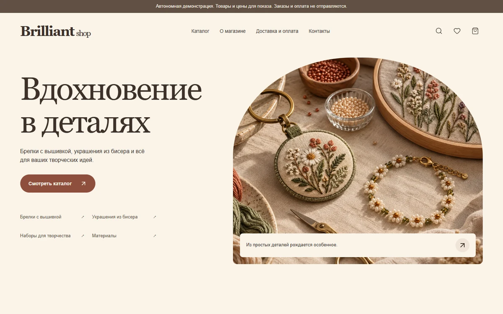
Brilliant shop
Вышивка, бисер и материалы для творчества: категории, поиск, варианты товаров, избранное и демонстрационная корзина.

Вышивка, бисер и материалы для творчества: категории, поиск, варианты товаров, избранное и демонстрационная корзина.
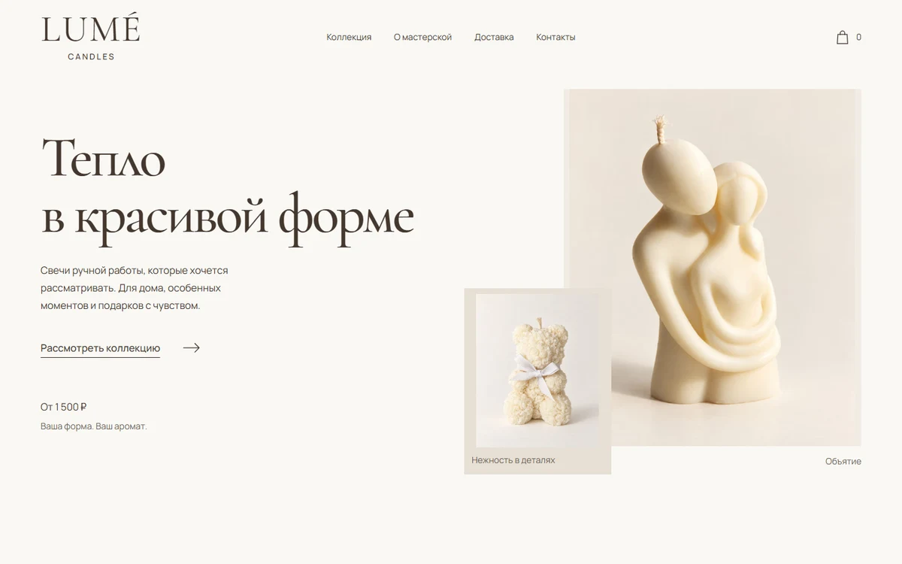
Свечи ручной работы: коллекция, выбор параметров изделия, корзина и подготовка заказа для отправки в Telegram.
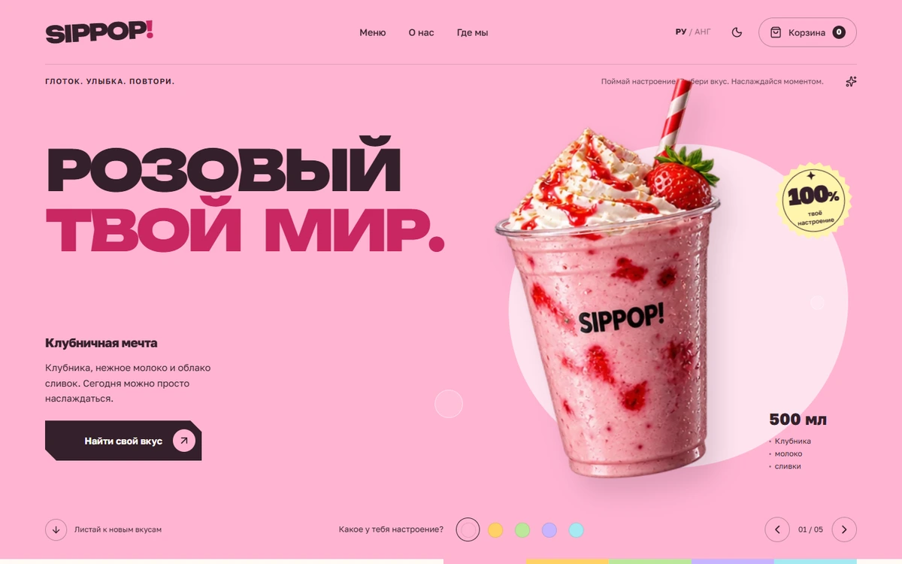
Напитки под настроение: смена вкусов, каталог, корзина, две темы и два языка.
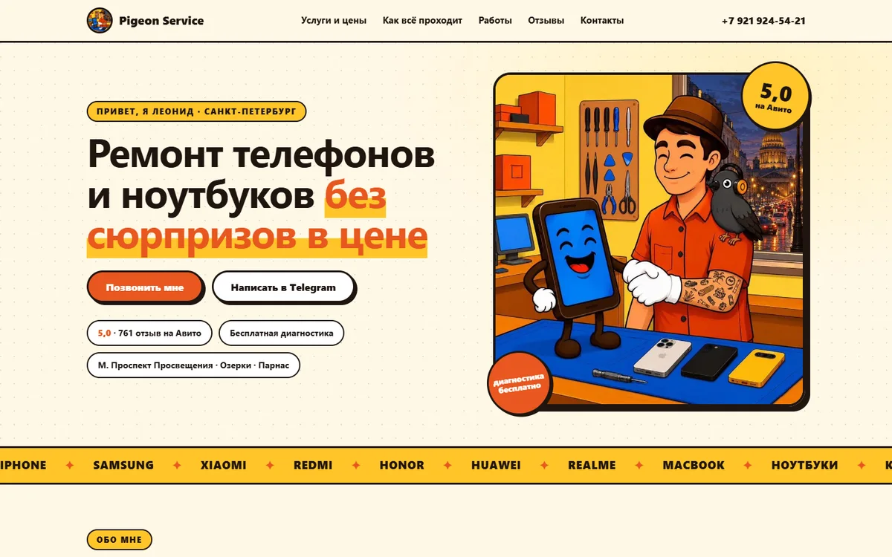
Сайт частного мастера: услуги, цены, фотографии ремонтов и контакты.
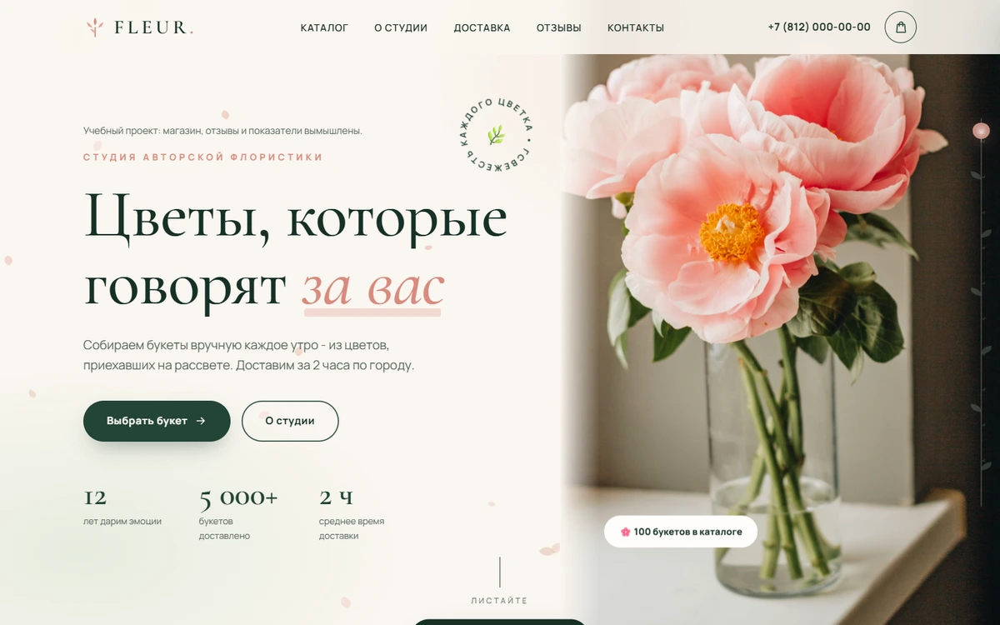
Цветочная студия: выбор букета, фильтры, корзина и пример оформления заказа.
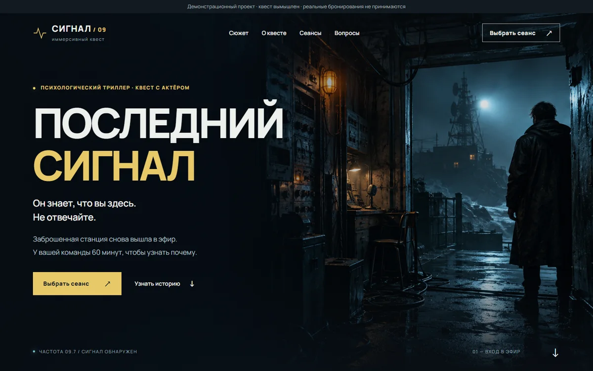
Атмосферная история, календарь сеансов и расчет стоимости команды.
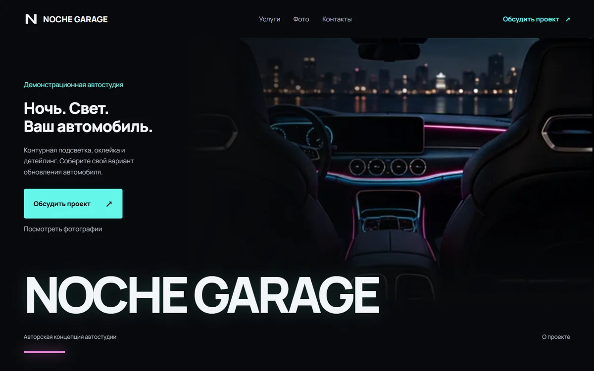
Подсветка, детейлинг и автозвук: выбор услуг, просмотр изображений и подготовка запроса. Вымышленный бренд, изображения ИИ.
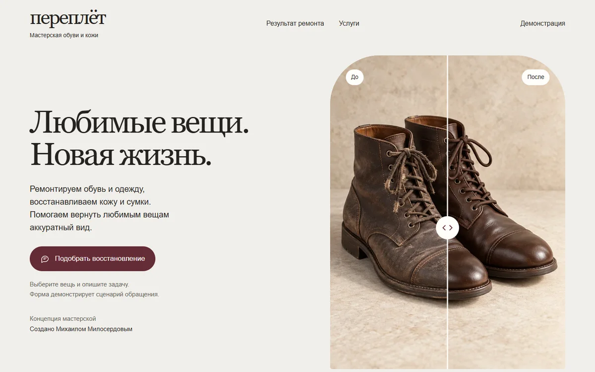
Восстановление обуви и кожи: интерактивное сравнение и подбор услуги. Вымышленный бренд, изображения ИИ.
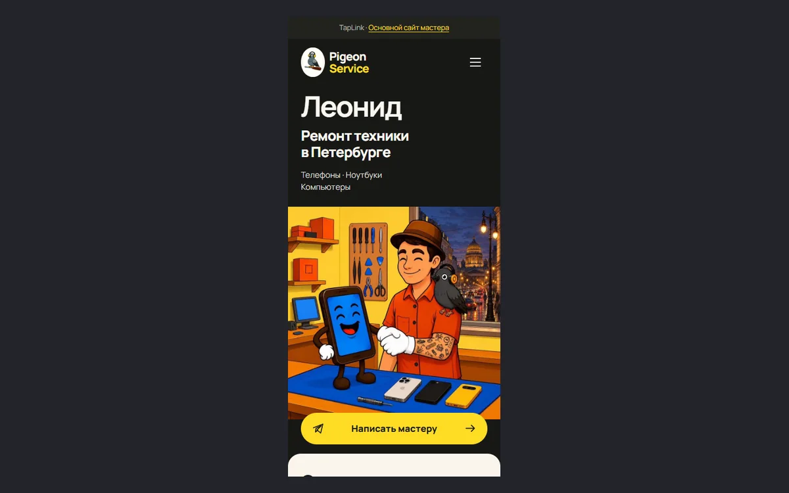
Ремонт техники, фотографии работ и контакты в компактном формате.
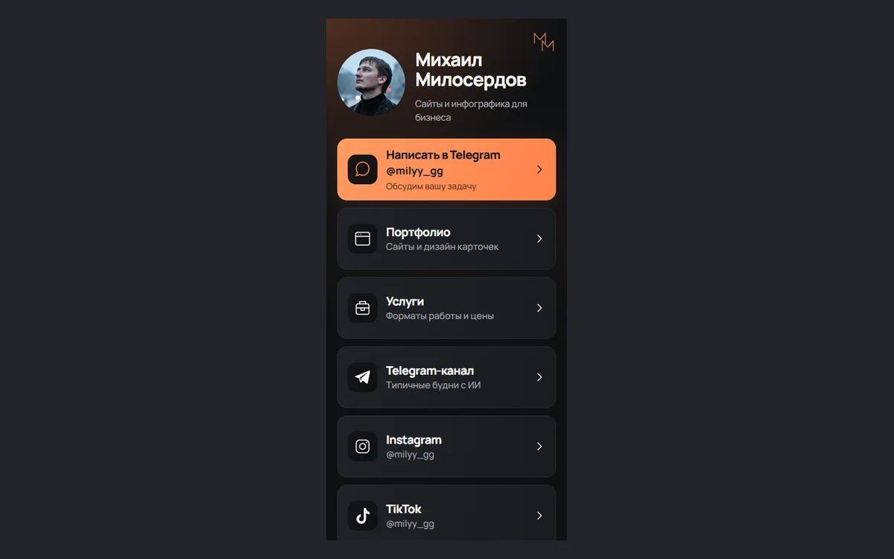
Портфолио, услуги, Telegram и социальные сети на одной странице.
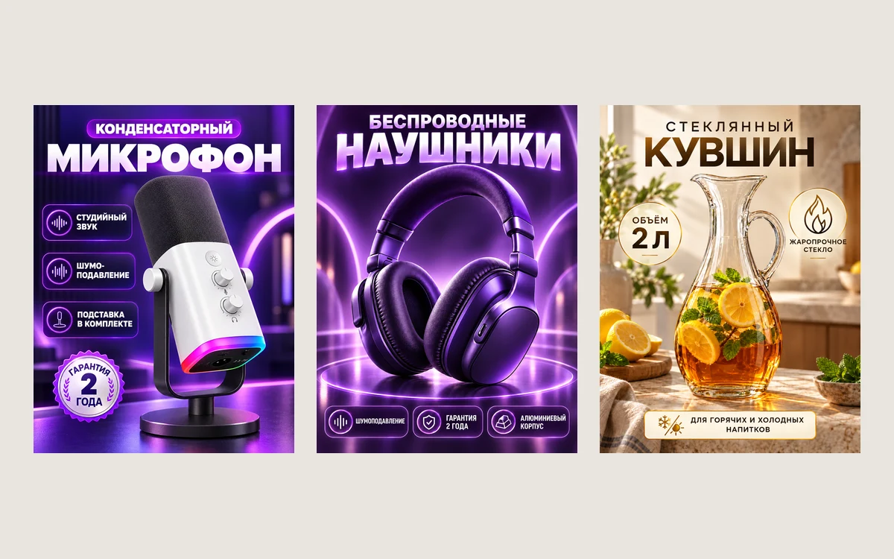
Оформление товаров для маркетплейсов. Пять новых работ в одном просмотрщике.
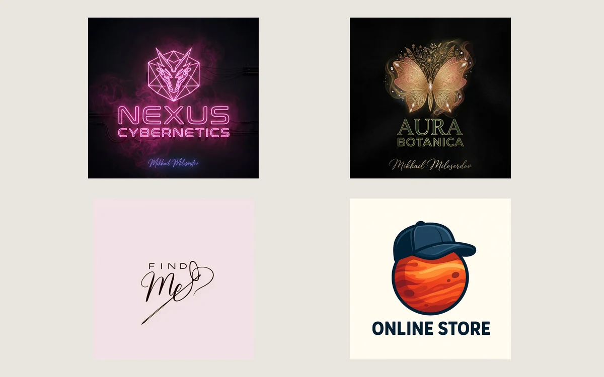
Nexus Cybernetics, Aura Botanica, Find Me и Online Store. Каждый логотип можно рассмотреть отдельно.